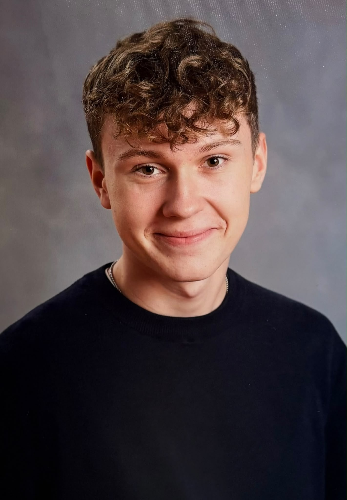

Die Menschen hinter Erlebnis Egerland
Benedikt
Danner
17 Jahre · im Projektjahr 2026
Meine Aufgaben
- Filmteam
- Kamera
- Schnittteam
- Tonteam
Meine Motivation
Warum ich dabei bin
Für mich war/ist das Seminar eine tolle Möglichkeit, etwas Neues zu lernen, neue Orte zu entdecken und gemeinsam etwas Eigenes auf die Beine zu stellen. Mein Interesse an der Geschichte des Egerlands und der deutsch-tschechischen Vergangenheit ist erst durch das Seminar entstanden. Besonders spannend finde ich, wie sehr die Menschen und ihre Geschichten die Orte geprägt haben, die wir besucht haben.
Am meisten Spaß gemacht hat mir das Erstellen unseres Dokumentarfilms. Als Teil des Filmteams durfte ich als Kameramann Eindrücke festhalten und später im Schnittteam aus vielen einzelnen Aufnahmen einen richtigen Dokumentarfilm entstehen lassen. Es ist ein besonderes Gefühl, etwas selbst mitzugestalten und am Ende sagen zu können, dass man an einem eigenen Dokumentarfilm mitgearbeitet hat.
Was zunächst wie ein gewöhnliches Schulprojekt begonnen hat, ist für mich zu etwas viel Größerem geworden. Wir haben viel Zeit und Energie investiert und gemeinsam etwas geschaffen, auf das wir wirklich stolz sein können. Mit unserem Film möchte ich auch anderen die Möglichkeit geben, das Egerland und seine besonderen Orte mit ihrer bewegenden Geschichte kennenzulernen. Für mich ist das Seminar eine Erfahrung, die weit über den normalen Schulalltag hinausgeht.